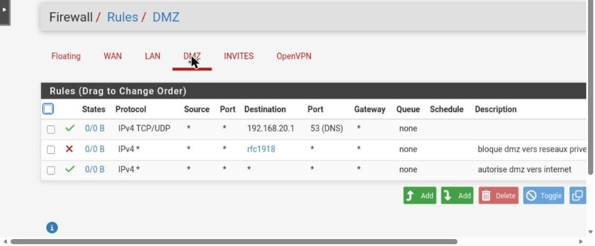
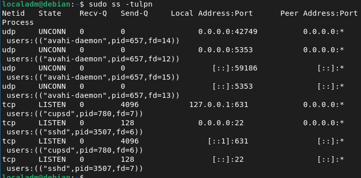
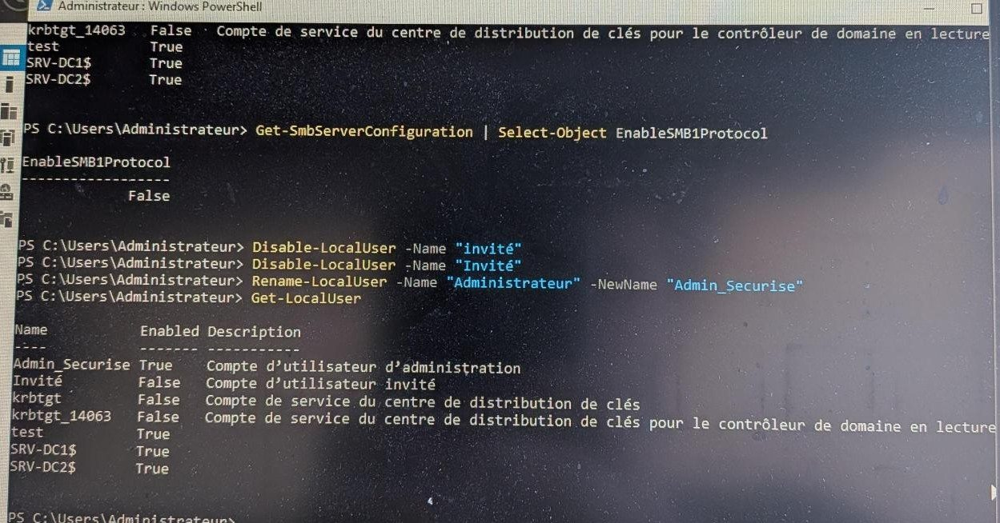

Mes projets et réalisations
Des TP d'infrastructure documentés, avec à chaque fois le contexte, les étapes, les commandes, les problèmes rencontrés et des captures. Filtrez par domaine :

Pare-feu pfSense et VPN nomade
pfSense sur Proxmox, zones LAN / DMZ / Invités en VLAN, règles de filtrage et OpenVPN.
Supervision avec Wazuh
SIEM Wazuh 4.14 tout-en-un sur Debian pour centraliser les événements de sécurité.

Durcissement d'un serveur Debian
SSH par clé, UFW, Fail2ban, AppArmor et audit Lynis. Avec un terminal animé.

Durcissement d'un poste Windows
13 paramètres durcis selon CIS L1 et l'ANSSI, avec un tableau avant / après interactif.

GLPI : parc et centre de support
Déploiement, inventaire, profils, catégories et cycle de vie complet des tickets.
Active Directory « TechNova »
AD DS, DNS, DHCP, OU par service, méthode AGDLP et GPO pour une PME de 30 salariés.
Installation d'une baie informatique
Projet de groupe : armoire, câblage, switchs, routeurs et comptes Active Directory.
CYCOM : Hacking Conference et CTF
Challenge « Capture The Flag » de cybersécurité offensive, en équipe et en temps limité.
Auto-formation TryHackMe
Vulnérabilités, protection des réseaux et gestion des incidents, en autonomie.